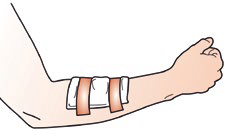
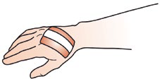
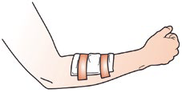
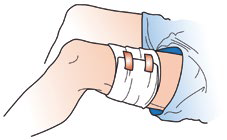
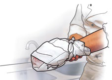
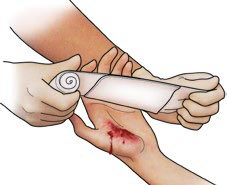
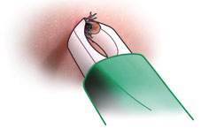
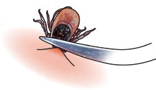
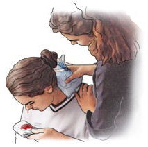

Wundversorgung bei kleineren Verletzungen
Kein Mensch bleibt von gelegentlichen Verletzungen verschont. Mal ist es eine Schnittwunde, Kinder haben Hände oder die Knie aufgeschürft, dann ist es der Holzsplitter in der Hand und manchmal auch eine Platzwunde am Kopf, vom gelegentlichen Nasenbluten ganz zu schweigen. Dieses Kapitel behandelt verschiedene, eher alltägliche Verletzungen und Wunden und deren Versorgung. Es werden verschiedene Verbandarten und Verbandtechniken beschrieben.
Wunden/Wundversorgung
Jede Wunde soll mit möglichst keimfreiem (sterilem) Verbandmaterial verbunden werden.
Eine gute Wundversorgung erfüllt drei Aufgaben:
- Die Wunde wird nicht weiter mit Keimen und Krankheitserregern verunreinigt.
- Die Blutung wird gestillt.
- Der Wundbereich wird ruhig gestellt, was die Schmerzen lindert.
Symptome
Schmerzäußerung (auch Gestik und Mimik beachten).
Je nach Größe der verletzten Blutgefäße bluten Wunden mehr oder weniger stark.
Achtung: Durch die Kleidung sind Verletzungen manchmal verdeckt.
Blutflecke in der Kleidung geben einen Hinweis.
Intuitiv halten verletzte Personen oft ihre Hand auf die Wunde.
Was ist grundsätzlich zu beachten
Bei der Wundversorgung sollten Sie zum eigenen Schutz und zum Schutz der betroffenen Person vor Infektionen Einmalhandschuhe tragen. Einmalhandschuhe befinden sich in allen Verbandkästen.
Wunden dürfen Sie nicht mit Ihren Händen berühren, da sie dadurch zusätzlich verunreinigt und infiziert würden.
Wunden sollten Sie nicht auswaschen oder reinigen. Ausnahmen sind z. B. die Wasseranwendungen bei Verbrennungen, bei Verätzungen und bei Bisswunden.

Wunden sollten ohne ärztliche Anweisung nicht mit Puder, Salben, Sprays, Desinfektionsmitteln o. Ä. behandelt werden.
Fremdkörper belassen Sie in der Wunde; diese werden umpolstert und müssen von der Ärztin oder vom Arzt entfernt werden.
Durch äußere Gewalteinwirkung sowie durch die Einwirkung von Hitze, Kälte oder von chemischen Stoffen auf den Körper können Wunden entstehen. Immer wird zunächst die Haut, das größte menschliche Organ, geschädigt. Außerdem können die unter der Haut liegenden Gewebeschichten wie Muskeln, Sehnen, Nerven und Blutgefäße verletzt werden, manchmal auch Knochen und Organe.
Durch eine Verletzung verliert die Haut ihre schützende Funktion gegenüber der Umwelt. Keimen und Krankheitserregern wird das Eindringen in den Körper ermöglicht, daher besteht bei Wunden immer die Gefahr einer Infektion.
Jede Gewebeschädigung verursacht Schmerzen. Sie sind bei großflächigen und tief gehenden Verletzungen meist stärker als bei kleinen oberflächlichen Verletzungen. Brand- und Schürfwunden sind besonders schmerzhaft.
Zu lebensbedrohlichen Blutungen siehe hier.
Zu Wunden durch thermische Schädigungen siehe hier, Verätzungen siehe hier.
Sepsis
Auch kleinere Wunden können zu einer Infektion und schlimmstenfalls zu einer Sepsis (siehe hier) führen. Kommt es zu einer Infektion mit Symptomen wie einem besonders schweren Krankheitsgefühl, Müdigkeit, Verwirrtheit, einer schnellen Atmung, erhöhter Pulsrate, niedrigem Blutdruck oder kalter/fleckiger Haut muss auch immer an eine Sepsis gedacht werden. Die betroffene Person muss sofort ärztlich behandelt werden!
Tetanusinfektion
Eine besonders gefürchtete Infektionsgefahr bei Wunden ist der Wundstarrkrampf (Tetanusinfektion), hervorgerufen durch den Tetanuserreger. Eine Infektion kann schon bei unscheinbaren, sehr kleinen Wunden auftreten, wenn sie verschmutzt sind. Einzige Vorbeugungsmaßnahme ist die Schutzimpfung. Daher sollte jeder gegen Wundstarrkrampf geimpft sein (Impfstatus kontrollieren!). Und es muss jede Wunde innerhalb von 6 Stunden einer Ärztin bzw. einem Arzt vorgestellt werden. Auf die Dokumentation, z. B. im Meldeblock, wird ausdrücklich hingewiesen.
Im Prinzip besteht ein sachgerechter Wundverband immer aus einer möglichst keimfreien Wundauflage, mit der die Wunde abgedeckt wird und einer individuellen (Wund- und Körperform angepassten) Befestigung, z. B. mit Heftpflaster, Mullbinden, Dreiecktuch oder mit Verbandpäckchen.
Im Folgenden erhalten Sie einen Überblick über die wichtigsten Verbandarten und Verbandtechniken.
Pflasterwundverband = Wundschnellverband
Für kleine Verletzungen mit geringer Blutung
So helfen Sie richtig
Schneiden Sie einen genügend großen Pflasterstreifen ab. Die Wundauflage soll immer größer als die Wunde sein.
Entfernen Sie zunächst die Schutzfolie von den Klebestreifen. Achten Sie darauf, dass Sie dabei die Wundauflage nicht berühren.

Legen Sie das Pflaster mit der Wundauflage auf die Wunde und befestigen Sie es faltenfrei.
Hinweis auf Impfschutz und ggf. erforderliche Arztbehandlung geben.
Dokumentation der Ersten Hilfe, z. B. Eintrag im Meldeblock.
Keimfreie Wundauflage und deren Befestigung
Großflächige Hautverletzungen müssen mit einer keimfreien Wundauflage aus Mull oder einem Verbandtuch bedeckt werden. Solche Wundauflagen sind einzeln keimfrei (steril) verpackt in Verbandkästen enthalten.
Zur Erhaltung der Keimfreiheit fassen Sie die Wundauflage beim Entnehmen aus der Verpackung nur mit den Fingerspitzen am Rand an und legen sie direkt auf die Wunde. Die verletzte Person kann sie dort festhalten, bis sie befestigt ist. Zum Befestigen von Wundauflagen verwenden Sie je nach Körperform Heftpflasterstreifen, Mullbinden oder Dreiecktücher.
Befestigung mit Heftpflaster (Streifenverband)
So helfen Sie richtig

Legen Sie eine Wundauflage auf die Wunde.
Schneiden Sie zwei ausreichend lange Heftpflasterstreifen von der Rolle ab.
Kleben Sie die Pflasterstreifen parallel zueinander über die Wundauflage und Haut.
Hinweis auf Impfschutz und ggf. erforderliche Arztbehandlung geben.
Dokumentation der Ersten Hilfe, z. B. Eintrag im Meldeblock.
Befestigung mit Fixierbinden
So helfen Sie richtig
Wundauflagen so auflegen, dass die gesamte Wunde bedeckt ist.

Mit einer Mullbinde umwickeln Sie die Wundauflage/n.
Im Bereich von Gelenken werden die Bindengänge über Kreuz gewickelt, so dass der Verband Stabilität erhält.
Das Bindenende wird zum Abschluss des Verbandes untergesteckt oder mit einem Heftpflasterstreifen befestigt.
Den Körperteil möglichst erhöht lagern und nicht mehr bewegen.
Hinweis auf Impfschutz und erforderliche Arztbehandlung geben.
Dokumentation der Ersten Hilfe, z. B. Eintrag im Meldeblock.
Fixierbinden und Dreiecktücher sind nicht steril. Sie werden daher nicht direkt auf eine Wunde aufgebracht. Sie sind nur zur Befestigung von sterilem Verbandmaterial wie Wundauflagen und Verbandtüchern vorgesehen.
Befestigung mit dem Dreiecktuch
Beispiel Verbandtuch
So helfen Sie richtig

Verbandtücher werden vorsichtig so auf die Wunde gelegt, dass die Wunde komplett bedeckt ist.
Mit Heftpflasterstreifen, Mullbinden oder Dreiecktüchern kann die Befestigung erfolgen.
Den Körperteil möglichst nicht mehr bewegen.
Hinweis auf Impfschutz und erforderliche Arztbehandlung geben.
Dokumentation der Ersten Hilfe, z. B. Eintrag im Meldeblock.
Sehr großflächige Wunden, z. B. Schürfwunden, Brandwunden oder Verätzungen, werden mit Verbandtüchern aus einem Verbandkasten verbunden und mit Heftpflaster, Mullbinden oder Dreiecktüchern (wie abgebildet) befestigt. Aber auch Verletzungen, die nur locker zu bedecken sind, wie offene Bauchverletzungen oder Schädelverletzungen, werden mit Verbandtüchern versorgt.
Blutende Wunden/Wundversorgung
Symptome
Betroffene Person schildert den Unfallhergang.
Schmerzäußerung (auch Gestik und Mimik beachten).
Erkennbare stärkere Blutung aus einer offenen Wunde, die einen Verband und Ruhigstellung erfordert.
So helfen Sie richtig

Ziehen Sie sich bei blutenden Wunden zum eigenen Schutz immer Einmalhandschuhe an.
Öffnen Sie die Verpackung des Verbandpäckchens, und entfalten Sie den Bindenanfang mit der Wundauflage.
Legen Sie die Wundauflage auf die Wunde und befestigen Sie die Wundauflage durch Umwickeln (ohne starken Zug) mit der Binde.
Abschließend fixieren Sie den Verband z. B. mit Pflaster.
Den Körperteil möglichst erhöht lagern und nicht mehr bewegen.
Ggf. Notruf/Alarmieren Sie den Rettungsdienst.
Dokumentation der Ersten Hilfe, z. B. Eintrag im Meldeblock.
Ein ideales Verbandmittel zur Versorgung blutender Wunden ist das Verbandpäckchen. Es ist steril verpackt und beinhaltet bereits eine Wundauflage, die auf einer Binde befestigt ist. Da sich im Verbandkasten unterschiedliche Größen befinden, bestimmen Sie entsprechend der Größe der Wunde, welches Verbandpäckchen Sie verwenden. Es können auch mehrere Verbandpäckchen neben- und übereinander gewickelt werden.
Tierbisswunden/Wundversorgung
Symptome
Betroffene Person schildert den Unfallhergang.
Schmerzäußerung (auch Gestik und Mimik beachten).
Erkennbar ist meist eine Risswunde oft mit Gewebequetschung (Blaufärbung) und Blutung.
Betroffene haben ggf. Schockanzeichen.
So helfen Sie richtig
Verletzte Person beruhigen und psychisch betreuen.
Die Wunde keimfrei verbinden.
Die erhebliche Infektionsgefahr erfordert immer eine umgehende ärztliche Abklärung.
Hinweis auf zwingend erforderlichen Tetanusimpfschutz geben.
Ggf. Notruf/Alarmieren Sie den Rettungsdienst.
Hinweis für Helferinnen oder Helfer bezüglich Tollwut beachten.
Dokumentation der Ersten Hilfe, z. B. Eintrag im Verbandbuch oder Meldeblock.
Besteht der Verdacht, dass das Tier tollwütig sein könnte, sollte die Wunde umgehend mit Seifenlösung ausgewaschen werden, um die Erreger zu entfernen.
Die Wunde muss sofort ärztlich behandelt werden, ggf. ist eine Schutzimpfung notwendig.
Bisswunden durch Tiere und Menschen, sowie auch Kratzer von Tieren, bedeuten immer eine große Infektionsgefahr. Durch den Biss werden Erreger in die Wunde übertragen. Das Gewebe im Wundbereich wird oft gequetscht, was die Infektionsgefahr noch erhöht.
Fremdkörper in Wunden/Wundversorgung
Symptome
Betroffene Person schildert den Unfallhergang.
Schmerzäußerung (auch Gestik und Mimik beachten).
Erkennbarer Fremdkörper, ggf. mit einer Blutung.
Je nach Größe und Lage müssen ggf. innere Verletzungen mit entsprechenden Symptomen in Erwägung gezogen werden.
So helfen Sie richtig
Verletzte Person beruhigen und psychisch betreuen.
Fremdkörper grundsätzlich nicht entfernen! Das gilt für kleine, aber auch für größere Gegenstände.
Ggf. Notruf/Alarmieren Sie den Rettungsdienst.
Legen Sie vorsichtig eine oder mehrere Wundauflagen, ggf. auch zusätzliches Polstermaterial um den Fremdkörper. Achten Sie darauf, dass der Fremdkörper dabei nicht bewegt wird.
Befestigen Sie alles mit einer Binde oder mit Heftpflaster.
Der Fremdkörper wird so fixiert und kann in der Regel im Krankenhaus sachgerecht entfernt werden.
Dokumentation der Ersten Hilfe, z. B. Eintrag im Meldeblock.
Grundsätzlich sollen Ersthelferinnen oder Ersthelfer Fremdkörper nicht entfernen, da die Gefahr besteht, dass zusätzliche Schmerzen und Schädigungen (z. B. an Blutgefäßen und Nerven) entstehen oder starke Blutungen auftreten.
Ausnahme: Insektenstiche (Stachel) und Zecken sollen sofort entfernt werden.
Fremdkörper im Auge/Wundversorgung
Meist geraten kleinste Fremdkörper, z. B. Staubteilchen, Mücken, Ruß, Wimpern o.Ä., in die Augen. Auf die Verwendung der vorgeschriebenen Schutzbrillen bei vielen Arbeiten wird ausdrücklich hingewiesen!
Symptome
Betroffene Person schildert den Unfallhergang.
Augen zugekniffen, ggf. Hand vor den Augen.
Brennender Schmerz, das Auge ist gerötet und tränt.
Fremdkörpergefühl im Auge, die Bindehaut wird gereizt, was für die Betroffenen äußerst unangenehm ist.
So helfen Sie richtig
Betroffene Person beruhigen und betreuen.
Verhindern Sie, dass die betroffene Person durch Reiben der Augen den Zustand verschlimmert.
Grundsätzlich sollen Fremdkörper im Auge nicht von Laien entfernt werden.
Bedecken Sie das betroffene Auge mit einer möglichst keimfreien Wundauflage und verbinden Sie beide Augen mit einem undurchsichtigen Tuch (z. B. mit einem Dreiecktuch aus einem Verbandkasten). Nur durch Verbinden beider Augen werden die Augen ruhiggestellt.
Bringen Sie die betroffene Person zum Entfernen des Fremdkörpers zur augenärztlichen Behandlung bzw. rufen Sie den Rettungsdienst.
Die Betreuung insbesondere von Kindern ist in diesem Fall besonders wichtig.
Dokumentation der Ersten Hilfe, z. B. Eintrag im Meldeblock.
Fremdkörper in Körperöffnungen
(Nase und Ohren)
Es kommt hin und wieder bei Kindern vor, dass sie Fremdkörper, etwa Spielzeugteile oder Ähnliches, in Nase oder Ohren stecken.
So helfen Sie richtig
Am besten lassen Sie den Fremdkörper, wo er ist. Lassen Sie ihn von einer Ärztin oder einem Arzt entfernen! Hilfreich ist, wenn man den Gegenstand beschreiben oder ein Duplikat zeigen kann. Das erleichtert die Behandlung.
Zeckenstich
Symptome
Erkennbar ist, je nach Entwicklungsstadium der Zecke, meist ein nur 1-2 mm großer dunkler Fremdkörper, der in der Haut steckt und sich nicht abstreifen lässt.
Es sticht bzw. juckt ein wenig und die Stelle ist etwas gerötet.
So helfen Sie richtig

Zecken gilt es so schnell wie möglich zu entfernen. Benutzen Sie eine Zeckenkarte oder auch eine Pinzette oder Zeckenzange. Für sehr kleine Zecken (Nymphen) gibt es spezielle Entfernungswerkzeuge.
Fassen Sie die Zecke möglichst dicht über der Haut und ziehen Sie sie mit gleichmäßigem Zug heraus. Ein Quetschen der Zecke ist zu vermeiden. Es sollten keine Rückstände in der Wunde zurückbleiben. Markieren Sie die Einstichstelle.

Eine Arztbehandlung ist dringend angeraten.
In Schulen, Kindertagesstätten und Betrieben muss der Vorfall z. B. im Meldeblock dokumentiert werden.
Weitere Infos finden Sie unter
www.zecken.de
www.dguv.de > Webcode d97465 ("Zeckenstich - was tun?")
Zecken können verschiedene Krankheitserreger übertragen. Die Erreger (Viren) der Frühsommer-Meningoenzephalitis (FSME) befallen das Nervensystem, es kann sich eine Hirnhaut- bzw. Gehirnentzündung entwickeln. Grippeähnliche Symptome mit Fieber, Kopfschmerzen und Erbrechen sind Anzeichen einer solchen Infektion. Treten diese Anzeichen nach einem Zeckenstich auf, suchen Sie unbedingt eine Ärztin oder einen Arzt auf. Gegen die FSME ist eine Impfung möglich.
Eine andere, durch Zecken übertragene Krankheit ist die Borreliose. Den Erreger tragen ca. 5-35 % der Zecken in sich. Daher muss die Stichstelle nach dem Entfernen der Zecke längere Zeit genau beobachten werden. Am besten, Sie kennzeichnen die Stelle z. B. mit einem Kugelschreiber.
Bildet sich dort eine kreisförmige Rötung, ist spätestens jetzt sofortige Arztbehandlung erforderlich. Ggf. ist eine Behandlung mit Antibiotika notwendig.
Nasenbluten
So helfen Sie richtig

Die betroffene Person soll ihren Kopf leicht vornüberbeugen, damit das Blut abfließen kann (Bild).
Legen Sie kalte Umschläge, Eisbeutel oder Kältepackungen in den Nacken. Die Blutstillung wird auch durch eine kurzzeitige Kompression der weichen Nasenflügel unterstützt.
Bei starkem, anhaltendem Nasenbluten ist ein Notruf erforderlich. Alarmieren Sie den Rettungsdienst.